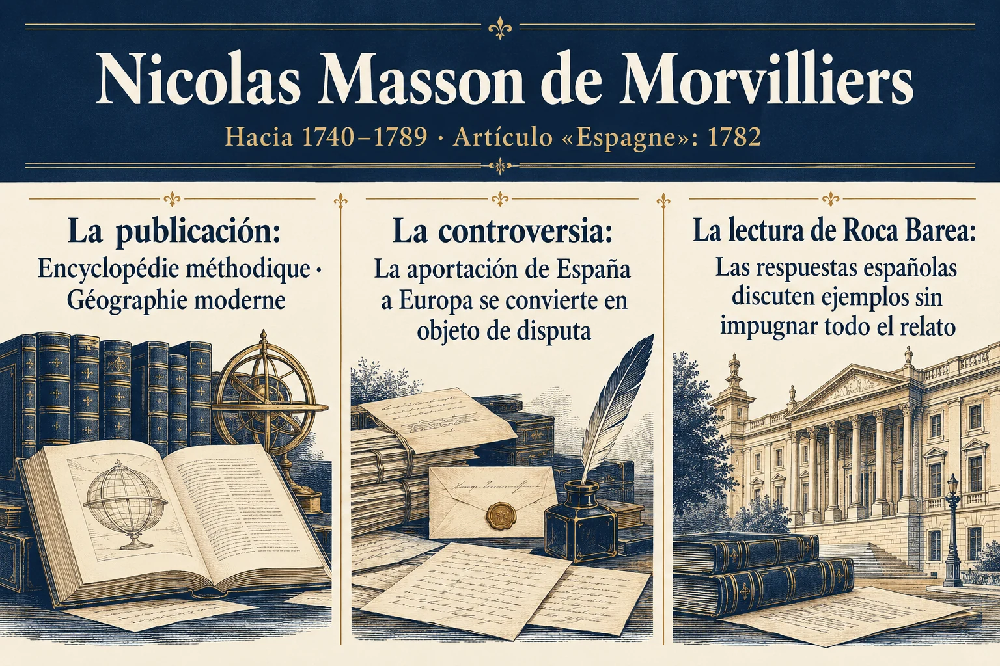

Volumen 1 · Capítulo 2 · Entrega 08
Masson de Morvilliers y los límites de la reacción española
Estudio expositivo de Fracasología de María Elvira Roca Barea
El artículo de Masson de Morvilliers sobre España en la Enciclopedia Metódica ofrece a Roca Barea una ocasión para examinar una respuesta española visible. Su pregunta sobre la aportación de España a Europa provocó una controversia que suele recordarse como una defensa de la cultura nacional. La autora se detiene en el alcance de esa reacción y sostiene que dejó intacta gran parte del relato que pretendía combatir. Para comprenderlo, propone estudiar la entrada completa y la forma en que los escritores españoles eligieron qué refutar.
La enciclopedia llegaba precedida por el prestigio del proyecto ilustrado de reunir y ordenar el conocimiento. Su recepción inicial en España fue favorable, hasta que la aparición de la entrada mostró la violencia de sus juicios. El libro recuerda que la obra siguió circulando en francés con una advertencia sobre las inexactitudes relativas a España. Este episodio permite a Roca Barea precisar la situación de los lectores y de las autoridades: querían participar en una cultura admirada, pero encontraban dentro de ella una representación de su país que podía pasar de la condescendencia al insulto directo.
La autora considera que Morvilliers lleva a una expresión más brusca unas ideas ya habituales. Sus afirmaciones no brotan de un vacío: prolongan la visión de España difundida por autores a los que las élites españolas habían leído con admiración. La diferencia de tono ayuda a desencadenar la reacción. Una acusación formulada con aparente serenidad racional podía aceptarse como diagnóstico; el insulto abierto hacía más difícil esa aceptación. El episodio muestra, para Roca Barea, hasta qué punto la forma de presentar un juicio influye en el grado de resistencia que encuentra.
La respuesta se concentró en probar que España sí había producido ciencia y cultura. En cambio, sostiene el ensayo, quedaron mucho menos discutidas las representaciones de su economía, su actuación americana o el gobierno de los Austrias. Esa selección estaba condicionada por el relato legitimador de la dinastía: defender los siglos anteriores podía entrar en tensión con la idea de que los Borbones habían rescatado una monarquía exhausta. La autorización para replicar tenía, por tanto, unos límites políticos y culturales. Se podía reivindicar una aportación intelectual sin revisar el conjunto de la historia que la enciclopedia ofrecía.


Ampliar imagenLeer el esquema y sus referencias
- La publicación. Encyclopédie méthodique · Géographie moderne
- La controversia. La aportación de España a Europa se convierte en objeto de disputa
- La lectura de Roca Barea. Las respuestas españolas discuten ejemplos sin impugnar todo el relato
Fuente de lectura: Roca Barea, Fracasología (2019), apartado desarrollado en la entrega 08. Esquema expositivo de la interpretación de la autora; no cita literal.
Se corrigen el nombre, la cronología y la publicación del archivo recibido: Nicolas Masson de Morvilliers, hacia 1740–1789; «Espagne», Encyclopédie méthodique, 1782. No es un artículo de 1770 de la enciclopedia de Diderot y d’Alembert.
Contraste documental: BnF: identidad y cronología de Nicolas Masson de Morvilliers Morel-Fatio, «M. Masson» (1922): publicación del artículo
Roca Barea recorre algunos de sus motivos recurrentes. La dificultad financiera se convierte en ruina permanente; el comercio y las exportaciones pueden interpretarse como prueba de dependencia; incluso la confianza que merecen los españoles para custodiar inversiones se combina con una acusación de pereza. En su análisis, los datos quedan subordinados a una conclusión de inferioridad establecida de antemano. La autora compara también la extensión y el tratamiento de las entradas sobre España y Francia para mostrar que el reparto de la atención responde a intereses que exceden la descripción geográfica.
La controversia termina enlazando con el problema de las élites. Roca Barea interpreta la respuesta defensiva y su dependencia de la orientación oficial como síntomas de una confianza debilitada. El receptor intenta probar su valía ante quien ha fijado el criterio y acepta buena parte de sus condiciones. La discusión sobre si España hizo alguna aportación a Europa puede dejar sin examinar quién define el canon y por qué determinadas contribuciones quedan fuera de él. El capítulo cierra así el recorrido desde la propaganda hasta el conocimiento autorizado. El siguiente estudiará las consecuencias de ese cambio de autoridad sobre la literatura, la historia, la ciencia y la relación entre los grupos cultos y la población.
Referencia de la entrega y criterio de lectura
Capítulo 2, «Masson de Morvilliers: ¿la reacción?». libro, OEBPS/Text/capit02.xhtml, epígrafe sigil_toc_id_11. Ejemplos y referencias de la autora, notas 110–120. El índice del libro presenta la variante «Norvilliers»; se sigue aquí la forma «Morvilliers» empleada en el cuerpo del capítulo.
El texto reconstruye el argumento de Roca Barea. Las alusiones a otras obras proceden del ensayo y no implican la consulta independiente de todas ellas. Criterio editorial de la colección.
Referencia de la entrega. Capítulo 2, «Masson de Morvilliers: ¿la reacción?». libro, OEBPS/Text/capit02.xhtml, epígrafe sigil_toc_id_11. Ejemplos y referencias de la autora, notas 110–120. El índice del libro presenta la variante «Norvilliers»; se sigue aquí la forma «Morvilliers» empleada en el cuerpo del capítulo.